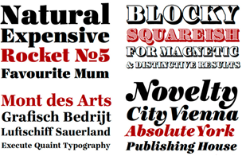
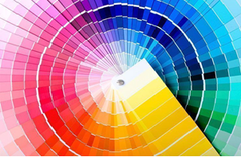

¿Qué es el diseño gráfico y cuál es su importancia?
Si te estás preguntando qué carrera elegir y te consideras una persona creativa, que se guía mucho por el arte y te detienes en los detalles, ¡Diseño Gráfico es la carrera ideal para ti! Pero si aún no sabes qué es y cuál es su importancia, ¡continúa leyendo porque aquí te dispersamos las dudas!
El diseño gráfico es una disciplina que combina arte, comunicación y tecnología para crear soluciones visuales y comunicativas. Consiste en la creación y organización de elementos como imágenes, tipografías, colores y formas, con el objetivo de transmitir un mensaje de manera efectiva y estética.
El diseño gráfico se aplica en distintos ámbitos como el diseño de logotipos, diseño editorial, diseño de publicidad, diseño web, entre otros. A través de principios y técnicas estéticas, el diseñador gráfico busca comunicar de manera clara, impactante y visualmente atractiva, estableciendo una conexión entre el emisor y el receptor.
Es una herramienta fundamental en la actualidad, especialmente en el ámbito digital, donde la imagen juega un papel crucial en la captación de la atención de los usuarios y en la construcción de la identidad de una marca.
¿Cuál es el origen del diseño gráfico?
El origen del diseño gráfico se remonta a los inicios de la comunicación visual y la escritura. A lo largo de la historia, diferentes culturas y civilizaciones han utilizado técnicas y elementos de diseño para transmitir mensajes de manera visual. Uno de los primeros ejemplos de diseño gráfico se encuentra en las pinturas rupestres de las cavernas, donde nuestros antepasados utilizaban imágenes y símbolos para representar su entorno y sus experiencias. Estas representaciones visuales podrían considerarse como los primeros intentos de comunicación gráfica.
Datos generales del diseño gráfico
Aquí puedes encontrar más información sobre conceptos claves del diseño gráfico:
| Concepto | Descripción | Ejemplo |
|---|---|---|
| Tipografía | Las tipografías son los diferentes estilos o tipos de letras que podemos elegir al hacer un diseño o escribir un texto y, así por ejemplo quien esté acostumbrado a utilizar por ejemplo el editor de texto Microsoft Word les sonará alguna de ellas como la Arial, Comic Sans, Helvética, Times New Roman o Impact entre otras ... En cortas palabras es el arte y técnica de la disposición y diseño del texto. |
 |
| Color | El uso de colores ayuda a comunicar mensajes y emociones. El color es un elemento fundamental en el diseño gráfico y tiene un impacto significativo en la percepción de un mensaje visual. El uso adecuado del color puede ayudar a transmitir una emoción, enfatizar una idea o crear una sensación de unidad en un diseño. |
 |
| Composición | Es la organización visual de elementos en un diseño. Poniéndolo en términos simples, es la parte donde todos los elementos separados se unen para formar un todo. Cuando todas tus letras, tus imágenes, tus gráficos y colores se unen para formar un diseño cohesivo. |
 |
¿Para que sirve el diseño gráfico?
El diseño gráfico sirve para una amplia variedad de propósitos y desempeña un papel importante en numerosas áreas como:
1. Para identificar una marca de otra:
Es crucial para crear una identidad visual única y distintiva para una marca. Un logotipo bien diseñado y una paleta de colores coherente ayudan a diferenciar una marca de sus competidores y a transmitir su imagen y valores de manera efectiva. Por ejemplo, reconocemos fácilmente marcas como Coca-Cola y Apple por sus logotipos icónicos, que se han convertido en símbolos reconocibles en todo el mundo.
2. Para generar recordación de un mensaje:
Mediante el uso efectivo de elementos gráficos, como ilustraciones, fotografías y tipografías, el diseño gráfico ayuda a hacer que un mensaje sea memorable. Una cuidadosa selección de colores y una disposición estratégica de los elementos visuales pueden ayudar a que un mensaje se destaque y se grabe en la mente del espectador. Ejemplos de esto son los anuncios y carteles publicitarios, en los que el diseño gráfico se utiliza para crear imágenes impactantes y mensajes llamativos que perduran en la memoria del público.
3. Para captar la atención del cliente ideal:
Vivimos en una era de sobreexposición a la información, por lo que es fundamental captar la atención del cliente ideal de forma rápida y efectiva. El diseño gráfico juega un papel clave en esto a través de la creación de materiales visuales atractivos y de calidad.
4. Para dar información importante:
El diseño gráfico también se utiliza para transmitir información de manera clara y concisa. A través de la combinación de elementos visuales y textos, se pueden crear infografías, gráficos y otros materiales visuales que facilitan la comprensión de información compleja. Por ejemplo, en manuales de instrucciones, el diseño gráfico se utiliza para presentar paso a paso el proceso de uso de un producto de manera visualmente clara y comprensible.


¿Cómo es el diseño gráfico según los diferentes sectores?
•Publicidad: En este sector el diseño se utiliza para crear anuncios que capten la atención y el interés de los consumidores.
•Editorial: En este punto el diseño se encarga de la maquetación y el diseño de libros, revistas, periódicos y otros medios impresos.
•Corporativo: Aquí el diseño gráfico se emplea para crear la identidad visual de una empresa o una marca, como su logotipo, sus colores, sus tipografías y sus elementos gráficos.
•Educativo: En este sector el diseño gráfico se usa para facilitar el aprendizaje y la comprensión de contenidos mediante recursos visuales como infografías, diagramas, ilustraciones y animaciones.
•Social: Por otra parte, en este caso el diseño gráfico se orienta a promover causas sociales o ambientales mediante campañas de concienciación o sensibilización.
•Artístico: Aquí el diseño gráfico se expresa como una forma de arte que explora las posibilidades creativas y experimentales del lenguaje visual.
En conclusión, el Diseño Gráfico es una carrera apasionante que te permitirá combinar tu amor por la creatividad con habilidades técnicas y herramientas digitales. Te brinda la oportunidad de trabajar en diferentes áreas y sectores, y tener un impacto en la sociedad.
Acerca de la Autora
Hola, soy Jennifer Sabalza Medina, una diseñadora gráfica apasionada por el arte y la creatividad. Con 5 años de experiencia en la industria del diseño, me especializo en publicidad y fotografía, especialización, como diseño de logotipos, diseño editorial, etc…
En este sitio web, comparto mi pasión por el diseño gráfico y ofrezco servicios profesionales para ayudar a mis clientes a alcanzar sus objetivos visuales y comunicativos.
No dudes en ponerte en contacto conmigo si tienes alguna pregunta o si estás interesado en trabajar juntos en un proyecto de diseño, ¡Espero poder colaborar contigo y ayudarte a llevar tus ideas al siguiente nivel!